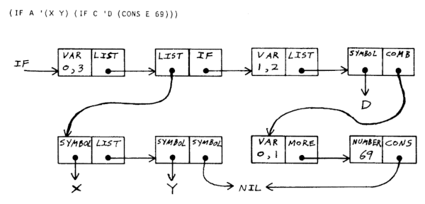

From here forward, I will use the λ shorthand for LAMBDA, which is part of the extended Lispkit compiler.
A common trait of all dialects of LISP is the S-expression.
In Lisp, a pair of parentheses indicates one step of calculation, operations use the prefix notation. This page will document a portable, lexically scoped, purely functional subset of Lisp that compiles to the SECD virtual machine. I will use uppercase function names to indicate built-in functions, and lowercase for user-defined functions.
- The self-hosted compiler source.
- The virtual machine runtine.
Atoms
A number is a signed integer represented by a sequence of decimal digits, optionally preceded by a sign.
45 +137 -27
A symbol is word represented by a sequence of characters, it cannot begin with a number or a sign, although these may appear later in a symbol.
Hello Hello-world x32
The (ATOM exp) procedure return the symbol T if the value of the expression is an atom or F otherwise.
(ATOM (QUOTE 12)) ; T (ATOM (CONS (QUOTE 12) (QUOTE 34))) ; F
Pairs
A pair joins two arbitrary values. The (CONS a d) procedure constructs pairs, the (CAR list) procedure extracts the first elements of the pair, and the (CDR list) procedure extracts the second.
(CONS (QUOTE foo) (QUOTE bar)) ; (foo.bar) (CAR (CONS (QUOTE foo) (QUOTE bar))) ; foo (CDR (CONS (QUOTE foo) (QUOTE bar))) ; bar
A list is a chain of pair that are cons-ed onto one another, ending with a nil.
(CONS (QUOTE a) (CONS (QUOTE b) (CONS (QUOTE c) (QUOTE NIL)))) ; (a b c.NIL)
Logic
The (EQ a b) procedure results in a value either T or F provided that the values of the expressions being compared are both atoms, and either they are both the same number, or they are both the same symbol:
(EQ (QUOTE (a)) (QUOTE (a))) ; F (EQ (QUOTE 42) (QUOTE foo)) ; F (EQ (QUOTE 42) (QUOTE 42)) ; T (EQ (QUOTE foo) (QUOTE foo)) ; T
Given three expressions, the (IF test exp2 exp3) returns the value of the second if the value of the expression test is T, otherwise returns the value of the third.
(IF (EQ (QUOTE 16) X) (QUOTE EQUAL16) (QUOTE NOT-EQUAL16))
Arithmetic
Arithmetic operators follows the prefix notation:
(* (+ (QUOTE 3) (QUOTE 5)) (QUOTE 19)) ; 144
Procedures
A (LAMBDA args exp) expression evaluates to a procedure. The environment which is in effect when a lambda expression is evaluated is enclosed in the newly created procedure, this is referred to as a closure. Given an expression, the (QUOTE exp) procedure returns that expression as a value.
(LAMBDA (X) (ADD X (QUOTE 2))) ; the procedure itself ((LAMBDA (X) (ADD X (QUOTE 2))) (QUOTE 14)) ; 16
The (LET exp [pairs]), and (LETREC exp [pairs]), expressions can associate pairs of values to an expression, given an expression with declarations returns its value. The main difference between let and letrec is that letrec's definitions are also visible in the expression itself.
(LETREC name (name LAMBDA (X Y) (ADD value1 value2) ) (value1 QUOTE 123) (value2 QUOTE 456) ... )
Programs
A program is either a LET, LETREC or LAMBDA expression. The program is given an expression from the outside world, that we will call INPUT to make explicit that this is our program entry procedure.
The (WRITE exp) procedure sends an expression to be dispatched to a device, by default, it is printing the expression in the console. If the symbol "Machiavelli" is used as argument, the program will evaluate to the following output:
(λ (INPUT) (WRITE (CONS (QUOTE Hello) INPUT)) ) ; "(Hello.Machiavelli)"
Prefixing the WRITE expression with the
:cli symbol routes the expression to the Command Line
Interface, which handles printing text. The #\Newline sybol
gets converted to a linebreak during printing.
(LETREC main (main λ (INPUT) (print-line (fib INPUT)) ) (fib λ (N) (IF (EQ N (QUOTE 0)) (QUOTE 0) (IF (EQ N (QUOTE 1)) (QUOTE 1) (ADD (fib (SUB N (QUOTE 1))) (fib (SUB N (QUOTE 2)))))) ) (print-line λ (text) (WRITE (CONS (QUOTE :cli) (CONS text (CONS (QUOTE #\Newline) (QUOTE NIL)))) ) ) )
Summary
- (LAMBDA args exp) Result exp with args bindings.
- (LET exp [pairs]) Result of exp with pairs bindings.
- (LETREC exp [pairs]) Result of exp with rec. with pairs bindings.
- (IF test exp2 exp3) Result of exp2 if test is T, else exp3.
- (ATOM exp) Returns T when exp is atom, else F.
- (QUOTE exp) Returns the exp as a value.
- (CAR exp) Returns a pair's first value.
- (CDR exp) Returns a pair's second value.
- (CONS exp1 exp2) Returns a pair of exp1 consed on exp2.
- (EQ atom atom) Returns T if two expressions are equal.
- (ADD num num) Returns the sum of two numeric values.
- (SUB num num) Returns the difference of two numeric values.
- (MUL num num) Returns the product of two numeric values.
- (DIV num num) Returns the quotient of two numeric values.
- (REM num num) Returns the remainder of two numeric values.
- (LEQ num num) Returns T if the first is less or equal to the second.
- (WRITE exp) Sends expression to a device, returns expression.
- (IMPLODE exp) Returns a symbol from a symbol.
- (EXPLODE exp) Returns a list from a symbol.
Writing EVAL required inventing a notation representing Lisp functions as Lisp data, and such a notation was devised for the purposes of the paper with no thought that it would be used to express Lisp programs in practice.
- Lispkit, SECD virtual machine in ANSI C.
- A Lisp through the Looking Glass
Standard Functions
The following is a collection of implementations for standard functions in Pure Lisp. Predicate functions suffixed with
? are expressions that return either T or F.
(null? x)is T if x is NIL, and is F otherwise.(not? x), T if x is F, else T.(or? x y), T if either arguments are T, else F.(and? x y), T if both arguments are T, else F.
(null? λ (x) (EQ x (QUOTE NIL))) (true? λ (x) (IF x (QUOTE T) (QUOTE F))) (not? λ (x) (IF x (QUOTE F) (QUOTE T))) (or? λ (x y) (IF x (QUOTE T) (true? Y))) (and? λ (x y) (IF x (true? y) (QUOTE F))) (number? λ (n) (EQ n (+ n (QUOTE 0))))
List Processing Functions
Length is the number of components in the list ls.
(length λ (ls) (IF (ATOM ls) (QUOTE 1) (+ (QUOTE 1) (length (CDR ls))) ) )
Member? returns T if the atom e is present in the list ls.
(member? λ (e ls) (IF (ATOM ls) (QUOTE F) (IF (EQ (CAR ls) e) (QUOTE T) (member? e (CDR ls)))) )
Filter is the list of those components for which the application of
fn is T.
(filter λ (fn ls) (IF (ATOM ls) (QUOTE NIL) (IF (fn (CAR ls)) (CONS (CAR ls) (filter fn (CDR ls))) (filter fn (CDR ls)) ) ) )
Map is the list whose components are obtained from those of
ls by application of fn.
(map λ (fn ls) (IF (ATOM ls) (QUOTE NIL) (CONS (fn (CAR ls)) (map fn (CDR ls))) ) )
Church Numerals are a representation of the natural numbers using lambda notation.
A kind of base1 arithmetic, in which numbers are represented by function nesting over an empty list, can be constructed in Pure Lisp using only very few primtives. This document will present Church Numerals through the lens of Lisp, alternatively one might prefer to read it coming from the Avian Numerals tutorial.
The following file contains the basic building blocks as an example:
(LETREC church (church LAMBDA (INPUT) (greater? (incr (incr (incr (incr nil)))) (incr (incr (incr nil)))) ) (nil QUOTE NULL) (#f QUOTE F) (#t QUOTE T) (incr LAMBDA (x) (CONS nil x)) (decr LAMBDA (x) (CDR x)) (zero? LAMBDA (x) (EQ x nil)) (not LAMBDA (x) (IF x #f #t)) (plus LAMBDA (x y) (IF (zero? x) y (plus (decr x) (incr y)))) (minus LAMBDA (x y) (IF (zero? y) x (minus (decr x) (decr y)))) (multiply LAMBDA (x y) (IF (zero? x) nil (plus y (multiply (decr x) y)))) (equal? LAMBDA (x y) (IF (zero? x) (zero? y) (IF (zero? y) #f (equal? (decr x) (decr y))))) (greater? LAMBDA (x y) (IF (zero? x) #f (IF (zero? y) (not (zero? x)) (greater? (decr x) (decr y))))) (lesser? LAMBDA (x y) (greater? y x)) )
"And you do Addition?" the White Queen asked. "What's one and one and one and one and one and one and one and one and one and one?"
"I don't know," said Alice. "I lost count."
"She can't do Addition," the Red Queen interrupted.
Lispkit compiler
Lispkit compiles to SECD machine instructions, here is the source for the lispkit compiler capable of converting lispkit .lisp into .secd files.
lispkit lispkit.secd lispkit.lisp > bin/lispkit-bootstrap.secd view raw
You can use the compiler above with this minimal virtual machine, and a SECD-compatible version of that same compiler below:
lispkit lispkit.secd input.lisp > output.secd view raw
incoming ronin lisp library church encoding s-expressions secd